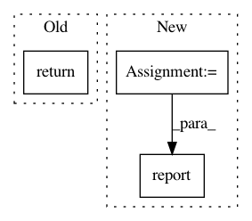

6aad1de658a933d3fa376f7fe9abf419da8a8bd2,python/baseline/tf/seq2seq/train.py,Seq2SeqTrainerTf,test,#Seq2SeqTrainerTf#Any#Any#Any#,69
Before Change
metrics["perplexity"] = np.exp(avg_loss)
for reporting in reporting_fns:
reporting(metrics, epochs, phase)
return metrics
@register_training_func("seq2seq")
def fit(model, ts, vs, es=None, **kwargs):
After Change
epochs = self.valid_epochs
total_loss = 0
total_toks = 0
metrics = {}
start = time.time()
for batch_dict in vs:
feed_dict = self.model.make_input(batch_dict)
lossv = self.model.sess.run(self.test_loss, feed_dict=feed_dict)
toks = self._num_toks(batch_dict["tgt_lengths"])
total_loss += lossv * toks
total_toks += toks
metrics = self.calc_metrics(total_loss, total_toks)
self.report(
epochs, metrics, start,
phase, "EPOCH", reporting_fns
)
@register_training_func("seq2seq")
def fit(model, ts, vs, es=None, **kwargs):
In pattern: SUPERPATTERN
Frequency: 3
Non-data size: 3
Instances
Project Name: dpressel/mead-baseline
Commit Name: 6aad1de658a933d3fa376f7fe9abf419da8a8bd2
Time: 2018-11-26
Author: blester125@users.noreply.github.com
File Name: python/baseline/tf/seq2seq/train.py
Class Name: Seq2SeqTrainerTf
Method Name: test
Project Name: pfnet/optuna
Commit Name: 7c0c86b0f92aab80c043133d2a249f250b78d167
Time: 2020-09-11
Author: k_nzw@klis.tsukuba.ac.jp
File Name: optuna/integration/pytorch_lightning.py
Class Name: PyTorchLightningPruningCallback
Method Name: on_validation_end
Project Name: pfnet/optuna
Commit Name: f2b39a120ae29bfb0b7c95e2659c2a1845f83a37
Time: 2019-01-08
Author: phjgt308@gmail.com
File Name: tests/integration_tests/test_chainermn.py
Class Name: Func
Method Name: __call__